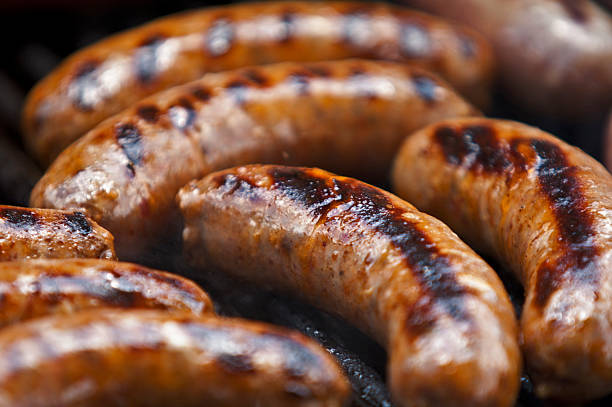

Italian Sausage

Description
Italian sausage is a simple and easy protein to add to your meals, requiring little effort to prep or cook, while still tasting fantastic.
These sausages fit well alongside salads, on bread, or eaten as is. Make sure to pick your favorite kind, as some come sweet while others are spicy.
Ingredients
- Italian Sausage
- Cooking Oil
Steps
- Preheat your oven to 375 degrees Fahrenheit.
- Place your sausages on a baking tray.
- Lightly coat the sausages in cooking oil.
- Bake for 25 minutes.
- Remove pan from the oven, and let the sausages rest for a few minutes.
- Enjoy however you like!